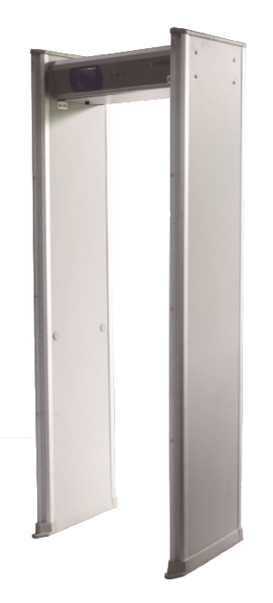

|  |
Product Instruction
EI-MD3000 high sensitivity digital walkthrough metal
detector use excellent electromagnetic testing and digital
processing technology, has high detection sensitivity of the
magnetic metal and nonmagnetic metal, and good recognition for
personal items such as coins, keys, belt buckle, etc.
|
Main Features
Small metal like a paper clip can be detected; suitable for
high level security inspection
With multi-zone high-brightness LED lights and indicate
accurate location with sound alarm
Combine digital and simulated technology, super high
anti-interference ability, reduce the error alarm
Strong ability for self-diagnosis; running status
monitoring; error alarm with sound and light
The outer cover is made of high strength material, which
has a strong capability of waterproof, fireproof, anticorrosion and
shockproof .
Modular design, easy installation and maintenance
TCP/IP network function
|  |